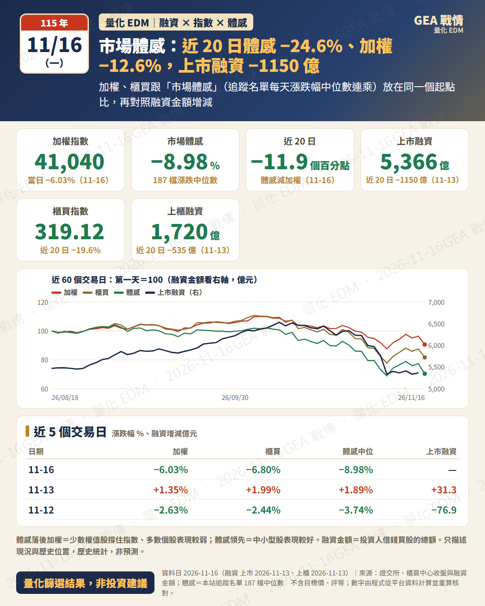
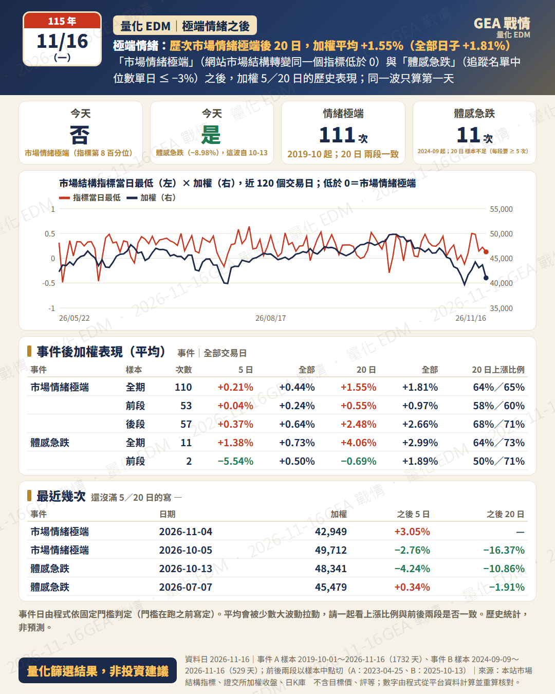

| 事件 | 樣本 | 之後 | 次數 | 平均 | 中位數 | 上漲比例 |
|---|---|---|---|---|---|---|
| 市場情緒極端 | 全期 | 5 日 | 111 | +0.21%／+0.44% | +0.45%／+0.61% | 56%／60% |
| 市場情緒極端 | 全期 | 20 日 | 110 | +1.55%／+1.81% | +1.49%／+2.05% | 64%／65% |
| 市場情緒極端 | 前段 | 5 日 | 53 | +0.04%／+0.24% | +0.51%／+0.42% | 58%／58% |
| 市場情緒極端 | 前段 | 20 日 | 53 | +0.55%／+0.97% | +1.32%／+1.49% | 58%／60% |
| 市場情緒極端 | 後段 | 5 日 | 58 | +0.37%／+0.64% | +0.28%／+0.79% | 53%／62% |
| 市場情緒極端 | 後段 | 20 日 | 57 | +2.48%／+2.66% | +2.87%／+2.72% | 68%／71% |
| 體感急跌 | 全期 | 5 日 | 11 | +1.38%／+0.73% | +3.46%／+0.83% | 73%／61% |
| 體感急跌 | 全期 | 20 日 | 11 | +4.06%／+2.99% | +4.54%／+3.35% | 64%／73% |
| 體感急跌 | 前段 | 5 日 | 2 | -5.54%／+0.50% | -5.54%／+0.67% | 50%／60% |
| 體感急跌 | 前段 | 20 日 | 2 | -0.69%／+1.89% | -0.69%／+2.57% | 50%／71% |
| 體感急跌 | 後段 | 5 日 | 9 | +2.92%／+0.96% | +3.92%／+1.11% | 78%／62% |
| 體感急跌 | 後段 | 20 日 | 9 | +5.12%／+4.18% | +4.54%／+4.33% | 67%／76% |
事件 A 日期：2025-09-23、2025-10-07、2025-10-27、2025-11-05、2025-11-27、2025-12-08、2025-12-29、2026-01-28、2026-02-25、2026-04-14、2026-04-23、2026-05-13、2026-05-25、2026-06-08、2026-06-23、2026-07-28、2026-09-01、2026-09-21、2026-10-05、2026-11-04

